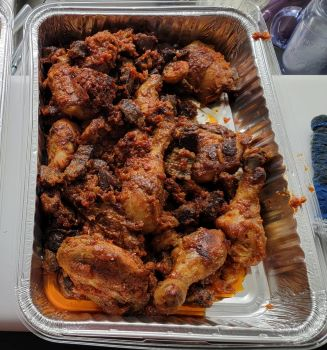

Pepper Chicken

Description
This is a recipe for Pepper Chicken. It is a great addition to any meal or can be eaten as a snack.
It can be served with Jollof rice and fried plantains.
Ingredients
- 1.2kg chicken
- 2 bell peppers
- 2-4 scotch bonnet peppers(to taste)
- 2 onions
- Vegetable oil
- Stock cubes - Knorr or maggi
- Thyme
- Salt
- Garlic
- Ginger powder
- Curry powder
Steps
- Cut one of the onions into thin slices
- De-seed the bell peppers and add them along with the scotch bonnet peppers into a food processor and chop roughly.
- Clean the chicken and cut into smaller pieces if whole. Add to a bowl and spice with thyme, diced onions and stock cubes (crushed), salt, curry powder, ginger and garlic powder.
Massage the spices into the chicken and set aside to marinate about an hour.
Cooking Directions
- Place the marinated chicken in a pot and allow to steam in its own juices for about 10 minutes. Then add some water to cook till done.
- Once the chicken is done, separate the stock and fry/grill or broil in the oven at 180°C (350F) till golden brown. You can use the chicken stock to prepare another meal like Jollof rice.
- Heat up some vegetable oil in a dry pot.
- Add the roughly chopped pepper blend and start frying on low to medium heat till all the water dries up and the oil floats.
- Add the grilled/broiled chicken into the fried pepper mix, and add little quantities of same spices used to spice the chicken if necessary.
- Stir until all the chicken is coated with the mix. Add in the thinly chopped onions to garnish and serve hot.